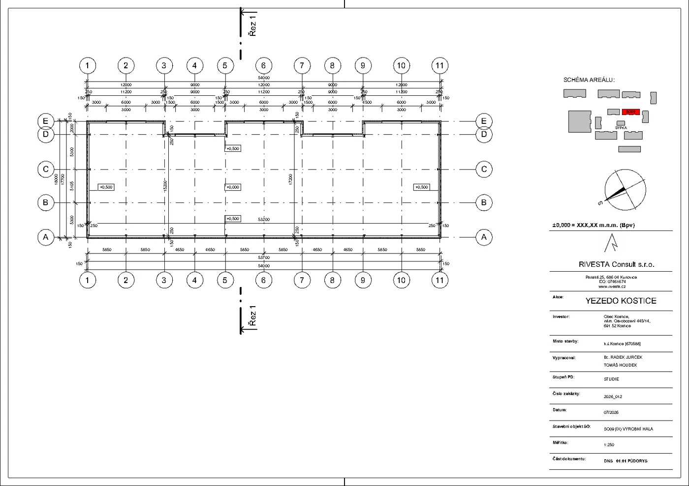

Připravovaná hala
Připravovaná hala
Výrobní hala
SO03
- Rozměry
- 54 × 24 m
- Zastavěná plocha
- 1 296 m²
- Sekce
- 5
Pět sekcí o šířce 9–12 m s vlastními vjezdy z obou stran haly.
Yezedo Development / Nabídka hal
Výroba, technologie i služby. Šest hal v měřítku místa, s dispozicí podle potřeb vaší firmy.
Haly na mapě
Šest hal o celkové zastavěné ploše 10 176 m², od 648 do 4 488 m². Klikněte na halu a otevře se její detail s parametry, výkresy a polohou v areálu.

Návrhová situace: Zásady rozvoje Smartzóny YEZEDO Kostice, 07/2026.
Nabídka vychází z koncepčního návrhu. Plochy jsou orientační zastavěné plochy, nikoli užitné. Aktuální dostupnost a konkrétní podmínky ověříme při jednání.
Připravovaná hala
Výrobní hala
Pět sekcí o šířce 9–12 m s vlastními vjezdy z obou stran haly.
 Připravovaná hala
Připravovaná hala
Výrobní hala
Pět sekcí o šířce 12–15 m, největší z řady hal šířky 24 m.
 Připravovaná hala
Připravovaná hala
Výrobní hala
Kompaktní hala se třemi sekcemi po 12 m pro menší provozy a služby.
 Připravovaná hala
Připravovaná hala
Výrobní hala
Největší hala v areálu. Prostor pro rozsáhlejší výrobní záměry.
 Otevřít půdorys ↗
Připravovaná hala
Otevřít půdorys ↗
Připravovaná hala
Hala + technické zázemí
Dvě sekce po 33 m s technickým zázemím areálu.

Otevřít půdorys ↗ Připravovaná halaVýrobní hala
Pět sekcí o šířce 9–12 m v užší hale hloubky 18 m.
Konstrukční systém i vnitřní dispozici lze přizpůsobit požadavkům zákazníka a charakteru provozu.
Součástí řešení může být druhé nadzemní podlaží pro kanceláře a administrativní zázemí.
Obslužné komunikace, parkování, technická infrastruktura, zeleň a návaznost na společná energetická řešení a správu areálu.
Dokumenty projektu
Průvodní dokumentace, situační výkresy a výkresová dokumentace jednotlivých hal.
Dokumenty se otevírají v novém okně. Kompletní dokumentace včetně řezů a technických příloh na vyžádání.
Vyžádat kompletní dokumentaci